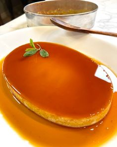
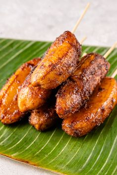
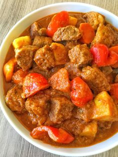
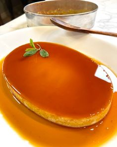
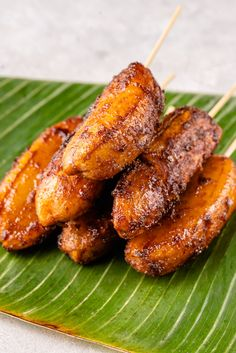
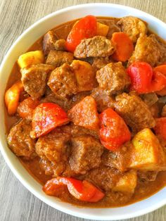
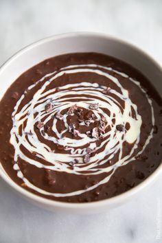
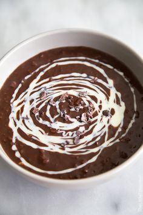

About Us
The website is based on Filipino dishes and desserts that will surely be loved by people who enjoy Filipino cuisine. This website has extensive archives of recipes from every category. Whether readers are looking for meal options or dessert ideas, this website has plenty of options. The clean, minimalist style of this website design is visually satisfying. The website design makes good use of white space and organizes elements from delicious dishes to sweet and wonderful desserts that are a great source of inspiration for aspiring cooks.
This is a different kind of food website. You can find dishes and desserts here that are all from the Philippines; this website is about Filipino recipes. These recipes include some beautiful photography. It loads quickly, and the posts are easy to read, which makes it enjoyable for visitors to find recipes that interest them.
What's your Favorite?
 







 
